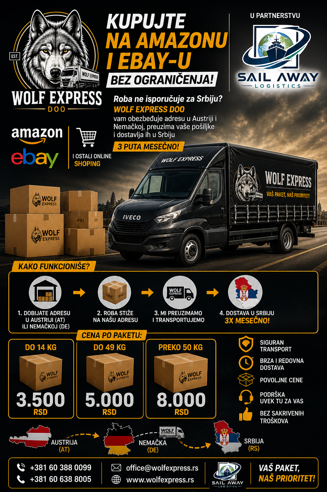

Part Load Transport
Efficient transport for smaller shipments, urgent pallets, partial van capacity and flexible routes across the EU.
EU sleeper-cabin van freight up to 3.5t
Part load and full load transport across the whole European Union, with 24/7 dispatch assistance and complete document support.
What we do
Sailaway Logistics supports shippers, forwarders, manufacturers and warehouse teams with clear EU van transport, dispatch communication and document follow-up.
Efficient transport for smaller shipments, urgent pallets, partial van capacity and flexible routes across the EU.
Dedicated van capacity for direct shipments where the client needs one vehicle, one route and clear delivery timing.
24/7 dispatch assistance, driver communication, route follow-up, shipment status updates and practical problem solving on the road.
Support with necessary transport documentation for import and export, including CMR, POD, transport orders and delivery confirmations.
Pregled za klijente
Ovaj deo pokazuje kako početna strana treba da izgleda profesionalnije: kome pomažete, kako ide tok posla i zašto je saradnja sa Sailaway Logistics jasna od dispatch-a do završne dokumentacije.
Špediterima, freight forwarderima, proizvođačima, skladištima i transportnim firmama kojima je potreban praktičan EU kombi transport uz direktnu komunikaciju.
Klijent šalje rutu, robu i termin. Sailaway proverava dostupnost, usklađuje plan, vodi dispatch komunikaciju i zatvara predmet kroz uredno praćenje dokumentacije.
Umesto razbacanih informacija, prikaz ostaje fokusiran na stvarne potrebe klijenta: pregled rute, vreme, jasne informacije, kontrolu dokumentacije i poverenje.
Za kompanije koje imaju robu
Ako vaša kompanija ima robu spremnu za transport, Sailaway Logistics može da koordinira pronalazak odgovarajućeg kombija ili drugog vozila, uporedi opcije rute, uskladi datum utovara i radi u okviru ciljne cene koju želite da platite.
Mesto utovara, mesto istovara, dimenzije robe, težinu, datum i posebne zahteve.
Pošaljite željeni budžet, a mi proveravamo realne opcije transporta.
Tražimo odgovarajući kombi ili drugo vozilo i jasno obaveštavamo klijenta o toku procesa.
Koordinišemo kretanje robe širom Evropske unije i pomažemo klijentima da pronađu odgovarajuće opcije za parcijalne utovare, kompletne utovare, planirane pošiljke i hitne zahteve.
Šta je novo
Ovaj deo daje početnoj strani aktivniji i ozbiljniji utisak kroz stvarna unapređenja usluge, umesto praznog promotivnog sadržaja.
Sailaway Logistics sada ima preciznije ulazne stranice za auto-delove, dopunu zaliha, transport od dobavljača do skladišta i hitne EU transportne zahteve.
Pogledajte primerUsluge, signali poverenja i putanje za slanje upita se grupišu profesionalnije kako bi novi posetioci brže razumeli čime se Sailaway bavi i kako da krenu.
Umesto da prikazuje samo transportni kapacitet, sajt sada jasnije ističe komunikaciju na ruti, praćenje CMR/POD dokumentacije i praktičnu kontrolu pošiljke kao deo usluge.
Sailaway Logistics i Wolf Express pokreću novu uslugu za kupce iz Srbije: poručite robu online, pošaljite je na naše adrese u Nemačkoj ili Austriji, a mi je organizovano dovozimo u Srbiju tri puta mesečno.
Kupac više ne mora da odustane od porudžbine ili da čeka beskonačno kada prodavac nema direktnu dostavu za Srbiju.
Roba stiže na našu adresu, mi preuzimamo, grupišemo i redovno dovozimo za Srbiju kroz pregledan model koji ljudi odmah razumeju.

Srbija SEO fokus
Umesto opštih logističkih izraza, ove stranice ciljaju konkretne komercijalne upite: transport robe iz Srbije, kombi prevoz, hitan transport, dispatch usluge i glavne međunarodne pravce.
Glavna stranica za transport robe iz Srbije, logističku podršku, organizaciju vozila i povezivanje sa evropskim rutama.
Za firme kojima treba 3.5t kombi prevoz, parcijalni ili namenski kombi transport iz Srbije ka EU.
Za urgentne pošiljke, vremenski osetljivu robu i situacije kada je brz odgovor važniji od dugog tender procesa.
Za prevoznike iz Srbije koji žele pomoć oko svakodnevne komunikacije, ruta, klijenata i dokumentacije.
Stranica za firme koje traže prevoz robe iz Beograda ka EU rutama, skladištima i distributivnim centrima.
Za kompanije iz Novog Sada kojima treba organizovan kombi ili robni transport prema Evropi.
Za južnu Srbiju, hitne pošiljke i planirane komercijalne ture iz Niša prema EU tržištu.
Za klijente koji traže širu logističku podršku, koordinaciju vozila, dispatch i dokumentaciju između Srbije i EU.
Za robu koja ide ka Austriji ili dolazi iz Austrije, sa fokusom na brz dogovor i preglednu organizaciju.
Za svakodnevne komercijalne relacije i granično bliske isporuke između Srbije i Mađarske.
Za regionalne pošiljke, robu za distribuciju i prekogranične ture između Srbije i Hrvatske.
Za 3.5t kombi prevoz iz Beograda prema evropskim rutama kada treba brz i direktan odgovor.
Za industrijsku i komercijalnu robu iz centralne Srbije, posebno kada je potrebna jača operativna kontrola.
Za sever Srbije, granično bliske pošiljke i pravce koji brzo izlaze ka Mađarskoj i dalje ka EU.
Za kompanije iz zapadne Srbije koje traže pregledan prevoz robe, kombi transport i jasnu komunikaciju.
Za jedan od najvažnijih komercijalnih pravaca za robu, tekstil, delove i distributivne isporuke.
Za regionalne i tranzitne rute ka zapadnoj Evropi, sa fokusom na uredniji tok pošiljke.
Za centralnoevropske industrijske i komercijalne pravce koji traže stabilnu organizaciju.
Za klijente kojima ne treba celo vozilo, već ekonomičniji model grupisanih pošiljki.
Za firme koje traže organizovan prevoz paleta, sa jasnim terminima utovara i isporuke.
Za dobavljače, distributere i hitne industrijske tokove gde kašnjenje dela pravi pravi problem.
Za firme kojima treba ozbiljniji B2B pristup prevozu komponenata, opreme i proizvodne robe.
Za industrijske i distributivne tokove robe iz Pančeva, sa fokusom na ozbiljniju B2B organizaciju.
Za kompanije iz zapadne Srbije kojima treba pregledniji tok robe ka Srbiji i Evropskoj uniji.
Za jugozapad Srbije, regionalne rute i komercijalne pošiljke sa EU nastavkom.
Za snažan pravac ka severu i centralnoj Evropi, sa fokusom na industrijsku i distributivnu robu.
Za regionalne prekogranične rute koje traže brz odgovor, preglednu komunikaciju i stabilan tok robe.
Za centralnoevropske pravce i B2B pošiljke koje traže pouzdaniju organizaciju.
Za klijente kojima je važna podrška oko papira, CMR toka i manje administrativnih zastoja.
Za firme koje traže širi distributivni tok, dopunu zaliha i organizaciju isporuka.
Za poslovne pošiljke i buyer-intent upite koji su bliže stvarnom slanju transportnog zahteva.
Za ozbiljnije industrijske pošiljke, komponente i opremu koja traži veću operativnu kontrolu.
Glavni širi izraz za firme iz Srbije koje traže međunarodni EU transport, dokumentaciju i jasan operativni kontakt.
Za buyer-intent pretrage gde klijent već zna da mu treba prevoz robe između Srbije i Evropske unije.
Za firme koje traže direktan izraz vezan za kretanje robe iz Srbije ka državama Evropske unije.
Za izvozne tokove gde su i prevoz i dokumentacija podjednako važni za međunarodni posao.
Za uvozne tokove ka Srbiji sa fokusom na pregledniji međunarodni proces i manje zastoja.
Za firme koje traže više od vozila: međunarodnu koordinaciju, dokumentaciju i ozbiljniji logistički oslonac.
Za kompanije koje žele manje improvizacije i bolji tok informacija kroz ceo međunarodni transportni proces.
Pretraga po usluzi
Brz pristup EU transportu, dispatch podršci, floti, dokumentaciji i stranicama za slanje transportnog upita.
Brza kontakt tačka
Pošaljite mesto utovara, mesto istovara, datume, detalje robe i ciljnu cenu. Sailaway Logistics proverava odgovarajuće opcije vozila u EU, dispatch podršku i potrebe za dokumentacijom kroz jedan jasan proces.
Stranice sa jačom namerom kupca
Ove stranice ciljaju operativne potrebe sa jačom komercijalnom namerom od opštih logističkih pojmova i vode klijenta direktno ka slanju upita.
Za dobavljače, distributere i hitne isporuke rezervnih delova kojima je potrebna brza EU koordinacija.
Za dopunu skladišta, promotivnu robu i vremenski osetljive rute za replenishment.
Za inbound kretanje robe gde su i vreme preuzimanja i termin prijema u skladištu podjednako važni.
Za prebacivanje robe između skladišta, logističkih tačaka i distributivnih centara širom Evrope.
For clients
When your shipment needs a fast answer, Sailaway Logistics gives you a direct process: confirmed van capacity, clear route details, driver communication, 24/7 dispatch support and document follow-up after delivery.

Fleet & partnership
For transport companies that already have their own vans, Sailaway Logistics can support daily dispatch, freight coordination, documentation and client follow-up. When extra capacity is needed, we also operate our own 3.5t sleeper-cabin van fleet.
We help partners keep vehicles moving with dispatch assistance, freight search, route communication, paperwork support and transport follow-up.
Sailaway Logistics has 8 vans available for EU part loads and full loads, giving clients extra flexibility when dedicated capacity is needed.
All vans have cargo dimensions of 430 x 220 x 230 cm, suitable for professional EU van freight up to 3.5t.
Reputacija na platformama
Sailaway Logistics posluje preko etabliranih evropskih freight platformi kao što su Trans.eu i TIMOCOM. Rezultati ispod prikazuju skorije ocene kupaca i partnera, sa jakim ocenama za komunikaciju, dokumentaciju i tačnost.
Ocene platformi su zasnovane na poslednjim screenshot-ovima koje je dostavio Sailaway Logistics i mogu se menjati vremenom kako pristižu nove ocene.
Coverage
Sailaway Logistics works in partnership with Wolf Express DOO, established in 2022, combining modern logistics communication with practical road transport experience.
In partnership with Wolf Express DOO, established in 2022.
European coverage
Our work is built around road transport across the whole European Union. The marked points show representative cities, regions and freight corridors where van transport is commonly needed. Coverage is not limited to the dots: we support pickups and deliveries in major cities, smaller towns, villages and industrial zones when accessible by road.
Dots are representative service areas and common freight corridors, not a false claim of every exact completed delivery location.
How it works
Share loading place, unloading place, cargo details, loading date, weight and whether it is part load or full load.
We align timing, price, sleeper-van capacity, driver details and loading instructions before dispatch.
Communication stays clear through pickup, transit and unloading so the client knows what is happening.
CMR, POD and necessary import/export transport documents are followed so the shipment can be closed cleanly.
Česta pitanja o transportu
Da. Pošaljite mesto utovara, mesto istovara, datum, detalje robe i ciljnu cenu. Proveravamo odgovarajuće opcije za kombije, parcijalne utovare, kompletne utovare ili druga vozila.
Da. Fokusirani smo na transport unutar Evropske unije, uz podršku za planirane pošiljke, hitne zahteve, parcijalne i kompletne utovare i pronalazak odgovarajućeg vozila.
Da. Pomažemo oko CMR/POD praćenja, koordinacije import/export dokumentacije i 24/7 logističke komunikacije kroz ceo transportni proces.
Pošaljite rutu i potrebe za dokumentacijom. Možemo da proverimo prekograničnu freight podršku, dispatch komunikaciju i import/export praćenje za rute van EU povezane sa EU transportom.
Popularne EU transportne pretrage
Ove stranice su napravljene za kompanije koje traže pretragu vozila, freight forwarding podršku, dispatch pomoć i EU transport po određenim rutama.
Pretraga vozila, kombi transport, dispatch i praćenje dokumentacije za freight forwardere i kompanije sa robom.
Jasan vodič za kompanije koje šalju detalje utovara, informacije o ruti, dimenzije robe, ciljnu cenu i potrebe za dokumentacijom.
Freight koordinacija, komunikacija na ruti, prikupljanje CMR/POD dokumenata i 24/7 dispatch podrška za kombi firme.
Podrška fokusirana na rutu za robu koja se kreće između Španije i Nemačke, uključujući parcijalne i kompletne utovare.
Pretraga vozila i kombi freight podrška za Benelux, Nemačku i šire EU rute.
Transportna koordinacija za Srbiju, Hrvatsku, Mađarsku i EU rute uz podršku za dokumentaciju.
Brza pretraga vozila i dispatch podrška za vremenski osetljiv EU freight i hitnu robu.
Prekogranična freight koordinacija uz praćenje dokumentacije i dispatch komunikaciju.
Podrška klijentima povezana sa DKW karticama, EU freight koordinacijom i planiranjem ruta.
Kompanije mogu poslati mesto utovara, mesto istovara, detalje robe, datum utovara i ciljnu cenu.
Contact
Send the route and shipment details. We will respond with availability, timing and pricing for part load or full load transport up to 3.5t.